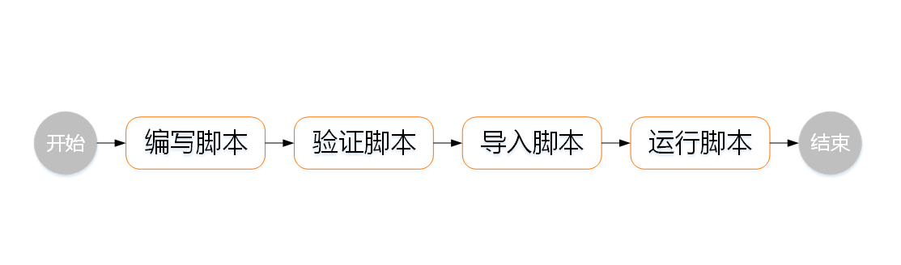
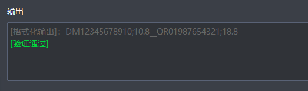

使用Lua脚本需遵循一定的注意事项和使用流程。
使用Lua脚本时，请启用通讯协议，脚本结果将通过通信协议输出。
在IDMVS中使用Lua脚本整体流程如下图所示。

编写脚本：
使用标准的Lua语法编写脚本，可根据实际需求调用IDMVS提供的接口函数，接口函数说明请参见脚本接口。
您也可以将本地存储的Lua脚本文件导入至脚本编辑区域。
验证脚本：
编写脚本完成后，在Lua脚本页面单击测试，验证脚本是否正确和满足需求，
导入脚本：
验证脚本无误后，在Lua脚本页面单击导入至相机，将脚本导入至读码器中。
运行脚本：
脚本导入到读码器中后，脚本自动启用，对读码结果进行处理并输出。
当脚本导入读码器成功后，过滤规则页面处的过滤模式参数值自动切换为“脚本”。
本节以在IDMVS中使用Lua脚本获取条码ppm为例，为您介绍使用Lua脚本操作步骤。
在主界面功能导航栏，选择 ，进入Lua脚本页面。
在脚本编辑区域，编辑脚本代码。
如下代码为ppm接口示例代码，您可以在Lua脚本页面的接口列表区域单击ppm接口的详情展开进行查看和复制。
function readformatEvent()
local count = readCount() -- 获取条码数量
local str = ""
local ppm
local deli = "__" -- 分隔符
local output = "" -- 最终的输出字符串
if count ~= 0 then
for i = 1, count do
str = readResult(i):readData() -- 获取第i个条码内容并存储到str中
ppm = readResult(i):ppm()
if i ~= count then -- 如果不是最后一个元素
output = output..str..";"..ppm..deli -- 在output后添加当前内容和分隔符
else
output = output..str..";"..ppm -- 如果是最后一个元素，则只添加内容
end
end
else
output = "noread"
end
return output -- 返回最终的输出字符串
end
在脚本编辑区域右下方，单击测试验证脚本。
验证结果可在脚本输出区域查看，验证通过如下图所示。如果验证不通过，脚本输出区域显示错误提示信息，请根据提示信息修改脚本代码。

单击导入至相机，即可将验证通过的脚本加载至读码器。
脚本成功加载至读码器会在脚本输出区域提示“导入脚本成功”。
当读码器工作时，脚本自动启用，对读码结果进行处理并输出。
（可选）在脚本编辑区域右下方，单击保存至本地，将开发完成的脚本代码导出至本地存储。